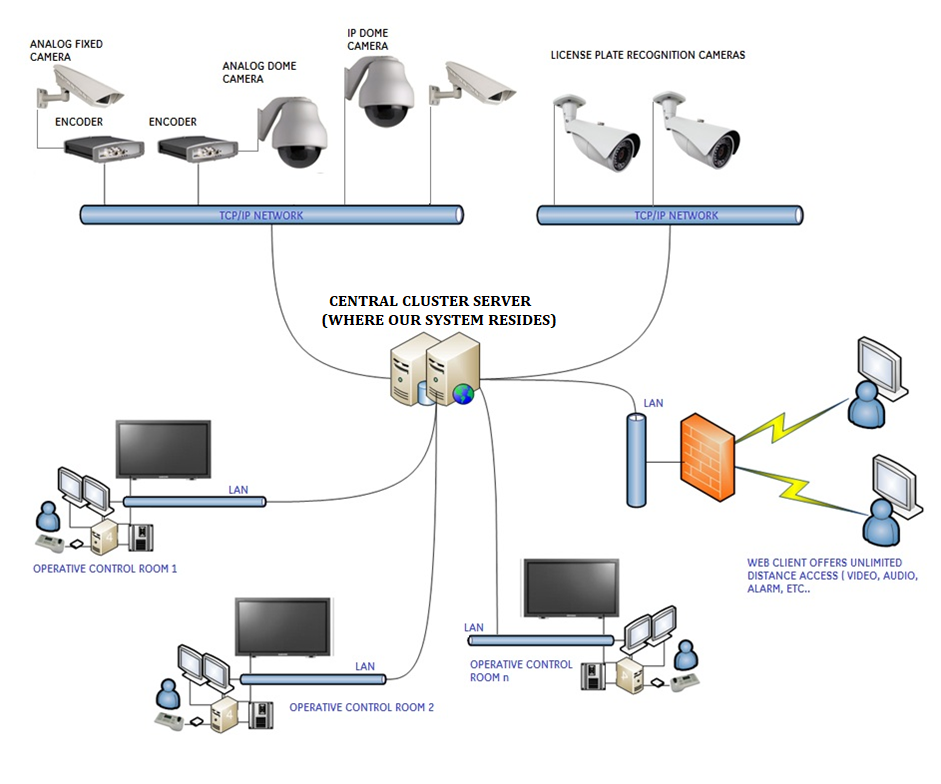

This project proposes the development of an AI-enabled smart surveillance system to enhance real-time security monitoring at telecommunications base stations. Traditional security methods often result in delayed responses to potential threats, which can lead to significant financial losses and service disruptions. By leveraging AI technology, this project aims to improve detection and response times, ensuring the reliability and resilience of telecommunications services.
The primary objective is to investigate the feasibility and effectiveness of integrating AI into surveillance systems for telecommunications base stations, focusing on object detection, anomaly identification, and predictive security measures.
Telecommunications base stations face significant security threats, both physically and cyber-wise, including theft, vandalism, and cyberattacks. Current security measures often result in high false alarm rates and slow response times, highlighting the need for advanced AI-driven surveillance systems to enhance real-time monitoring and predictive security.
Recent breaches underscore the urgency of integrating AI into surveillance systems to pre-empt both physical and cyber threats. This project aims to address these challenges by developing an AI-enabled smart surveillance system that unifies physical and cyber threat detection, reduces false alarms, and enables proactive security measures.
Telecommunications base stations are vulnerable to theft, vandalism, and cyberattacks, leading to substantial financial losses and service disruptions. Current security measures often result in false alarms and slow responses, underscoring the need for advanced solutions like AI-driven surveillance systems to enhance real-time monitoring and predictive security.
Main Objective: Implement an AI-enabled surveillance system for real-time security monitoring.
Sub-Objectives:
Main Research Question: How can an AI-enabled surveillance system enhance the security of telecommunications base stations?
Sub-Research Questions:
Key assumptions include:
This project enhances security by integrating AI into surveillance systems, improving detection and response times against physical and cyber threats. It also automates tasks, reduces false alarms, and supports the reliability and resilience of telecommunications services. Additionally, AI systems can adapt to new threats, ensuring ongoing security effectiveness.
The project will implement an AI-enabled surveillance system using AI algorithms like YOLO for object detection, Autoencoders for anomaly detection, and CNNs for image classification. LSTM networks will be used for time-series analysis to predict potential security breaches based on historical data. The system will integrate with existing infrastructure using edge computing devices for low latency and real-time processing.
Tools and technologies include Python, TensorFlow, PyTorch, edge devices (NVIDIA Jetson), IP cameras, motion sensors, cloud storage, and SQL databases for data management. Real-time dashboards will be developed using Power BI or Tableau.
AI algorithms like YOLO and Autoencoders analyze video feeds and sensor data for real-time threat detection.
AI-driven analytics reduce false alarms by identifying anomalies in real-time.
Predictive security measures are enabled through advanced AI analytics.
